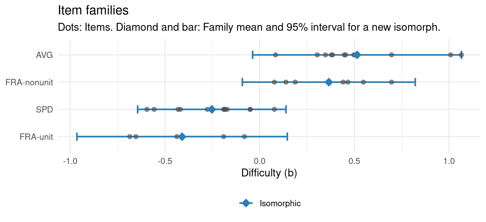

Chapter 15 Generating items
Learning goals. After this chapter you can
- explain automatic item generation (AIG) from item models, and how it differs from asking a language model for items;
- write an item model with
item_model(), with distractors built from misconceptions and constraints that rule out flawed items, and generate isomorphs withgenerate_isomorphs(); - check after field testing whether a family of isomorphs is equally
difficult with
calibrate_families(), and find the variable that makes a family spread; - fit a one-step model with a random item effect in mirt, or with eirm, and say when a family mean can stand in for a field test.
Key terms: Item model, LLTM, calibration.
15.1 The ideas
Testing programs need many items: For new forms each year, for adaptive tests that must not expose the same items too often (Chapter 11), and for practice. Writing and field-testing each item by hand is the slowest and most expensive part of test development. Automatic item generation (AIG) writes items from a template (Gierl and Haladyna 2013; Gierl and Lai 2013). An item model is a parent item with variable parts: A stem, a key and distractors, each written as a template, the values each variable can take, and constraints that every generated item must meet. Filling in the values gives isomorphs: Items that test the same thing in the same way and differ only in their surface, such as the numbers.
Two promises come with item models. The first is quality at scale: If the model is right, every item it generates is right, and an error in the model shows up in every item, where an automatic check can catch it. The second is calibration at the level of the family. If isomorphs are equally difficult, the item model can be calibrated once, and its new items can use the family’s difficulty without a field test of their own (Glas and van der Linden 2003; Sinharay et al. 2003). That promise is an empirical claim, and this chapter is about checking it.
A family’s items are never exactly equally difficult. The model for a family \(f\) is \[b_i = \mu_f + \varepsilon_i, \qquad \varepsilon_i \sim N(0, \sigma_f^2),\] where \(\mu_f\) is the family’s mean difficulty and \(\sigma_f\), the within-family SD, says how much its isomorphs differ. A new item’s difficulty is predicted by \(\mu_f\) with an error of about \(\sigma_f\). When \(\sigma_f\) is small, the family mean is as good as a field test of a few hundred test takers; when it is large, some variable in the item model changes what the items demand, and the model must be split or the variable added as a feature, as in the LLTM of Chapter 14. Explanatory IRT treats this as one model with item features and a random item effect (De Boeck and Wilson 2004; Geerlings et al. 2011).
Language models offer a second route: Ask for items in a prompt
(generate_items(), Chapter 17). They write more varied items,
but each is a one-off, with no template to calibrate and no guarantee that
two items with the same prompt are isomorphs. Template-based AIG is
predictable and traceable; every item can be rebuilt from its values. In
practice the two meet: Language models can help write item models, and
their items can be reviewed with the same checks.
15.2 Example 1: Writing an item model
An average speed item has two variables, the speed v and the time t.
Writing the distance as v * t keeps the answer a whole number. Each
distractor is the answer of a misconception:
# Item models for a simulated Grade 7 field test.
speed <- item_model(
stem = "A train travels {v * t} km in {t} hours. What is its average speed?",
key = "{v} km/h",
distractors = c(multiplied = "{v * t * t} km/h", subtracted = "{v * t - t} km/h",
added = "{v * t + t} km/h"),
values = list(v = seq(40, 120, 10), t = 2:6), name = "SPD")
frac <- item_model(
stem = "A class of {n} students voted. {num}/{den} of them chose soccer. How many students chose soccer?",
key = "{n * num / den}",
distractors = c(multiplied_only = "{n * num}", rest = "{n - n * num / den}",
one_part_too_many = "{n / den * (num + 1)}"),
values = list(n = c(12, 18, 20, 24, 30, 36, 40), num = 1:3, den = 2:6),
constraints = c("num < den", "n %% den == 0"), name = "FRA")
avg <- item_model(
stem = "The heights of {k} plants are {paste(seq(a, by = s, length.out = k), collapse = ', ')} cm. What is their mean height?",
key = "{a + s * (k - 1) / 2} cm",
distractors = c(sum = "{k * a + s * k * (k - 1) / 2} cm", largest = "{a + s * (k - 1)} cm",
divided_by_wrong_n = "{(k * a + s * k * (k - 1) / 2) / (k - 1)} cm"),
values = list(k = 3:5, a = c(10, 12, 14, 20), s = c(2, 4)),
constraints = "(s * (k - 1)) %% 2 == 0", name = "AVG")
speed
#> <mv_item_model> SPD
#> Stem: A train travels {v * t} km in {t} hours. What is its average speed?
#> Key: {v} km/h
#> Distractor 1: {v * t * t} km/h (multiplied)
#> Distractor 2: {v * t - t} km/h (subtracted)
#> Distractor 3: {v * t + t} km/h (added)
#> v: 40, 50, 60, ..., 110, 120
#> t: 2, 3, 4, 5, 6
#> 45 combinations of values meet the constraints; 45 give items whose options all differ.Printing a model checks it: All 45 combinations of speed and time give
four different options. generate_isomorphs() draws items from the
combinations and puts the options in random order:
x <- generate_isomorphs(speed, n = 3, seed = 15)
x$stem
#> [1] "A train travels 500 km in 5 hours. What is its average speed?"
#> [2] "A train travels 240 km in 6 hours. What is its average speed?"
#> [3] "A train travels 540 km in 6 hours. What is its average speed?"
as.data.frame(x[, c("id", "A", "B", "C", "D", "key")])
#> id A B C D key
#> 1 SPD-01 100 km/h 2,500 km/h 505 km/h 495 km/h A
#> 2 SPD-02 234 km/h 40 km/h 1,440 km/h 246 km/h B
#> 3 SPD-03 546 km/h 3,240 km/h 90 km/h 534 km/h CThe fraction model is less safe. With \(\frac{1}{2}\), the students who chose
soccer and those who did not are the same number, so the key and the rest
distractor are identical. generate_isomorphs() leaves such combinations
out, and says so:
fams <- generate_isomorphs(list(speed, frac, avg), n = 12, seed = 151)
#> FRA: 25 of 56 combinations of values give two identical options or cannot be computed, and were left out. Add a constraint to rule them out.
#> AVG: 2 of 24 combinations of values give two identical options or cannot be computed, and were left out. Add a constraint to rule them out.
table(fams$model)
#>
#> AVG FRA SPD
#> 12 12 12Almost half of the fraction model’s combinations were dropped, and two of the mean model’s. The message is a request to fix the model with a constraint, so that the next person who uses it, or the software, does not depend on the check (Exercise 1).
15.3 Example 2: Calibrating the families
The 36 items were field-tested on 800 students. We simulate the responses: Each family has its own difficulty, each item adds item-specific noise with an SD of 0.2 logits, and fractions with a numerator above 1, which take two steps, are 0.8 logits harder than unit fractions. Then we calibrate the Rasch model.
# Simulated field test of the generated items: 800 students.
set.seed(1515)
two_step <- !is.na(fams$num) & fams$num > 1
b_true <- c(SPD = -0.2, FRA = -0.4, AVG = 0.4)[fams$model] + 0.8 * two_step +
rnorm(nrow(fams), 0, 0.2)
theta <- rnorm(800)
resp <- sapply(b_true, function(b) rbinom(800, 1, plogis(theta - b)))
colnames(resp) <- fams$id
rasch <- mirt(as.data.frame(resp), 1, "Rasch", SE = TRUE, verbose = FALSE)
pars <- tidy(rasch)
items <- as.data.frame(fams)
b <- pars[pars$term == "b", ]
items$b <- b$estimate[match(items$id, b$item)]
items$b_se <- b$std.error[match(items$id, b$item)]calibrate_families() summarizes each family. Its observed SD includes
the estimation error of each \(b\); with se, the error variance is
subtracted, which leaves the within-family SD. The 95% interval is where a
new isomorph’s difficulty is expected to fall, and field_n translates the
prediction error into the size of a field test that would estimate the
item as precisely.
cal <- calibrate_families(items, family = "model", se = "b_se")
cal
#> Item families: 3 families, 36 items; SD within corrected for estimation error
#> family items mean_b sd_within 95% for new item field_n isomorphic
#> SPD 12 -0.25 0.19 -0.64 to 0.14 135 yes
#> FRA 12 0.04 0.46 -0.89 to 0.97 23 NO
#> AVG 12 0.51 0.27 -0.04 to 1.07 69 yes
#> field_n: Test takers a field test would need to estimate a new isomorph's b as precisely
#> as its family mean predicts it. Isomorphic: SD within at most 0.30.The speed and mean families are isomorphic, with within-family SDs of about 0.2 and 0.3 logits: Their family means are worth a field test of 70 to 140 students. The fraction family spreads over almost two logits. Sorting its items by difficulty shows why:
fr <- items[items$model == "FRA", c("id", "num", "den", "b")]
fr[order(fr$b), ]
#> id num den b
#> 22 FRA-10 1 6 -0.6857
#> 18 FRA-06 1 5 -0.6532
#> 19 FRA-07 1 5 -0.4371
#> 15 FRA-03 1 4 -0.1901
#> 21 FRA-09 1 6 -0.0803
#> 17 FRA-05 3 4 0.0779
#> 24 FRA-12 2 6 0.1389
#> 13 FRA-01 2 3 0.1877
#> 23 FRA-11 2 6 0.4410
#> 20 FRA-08 3 5 0.4661
#> 16 FRA-04 3 4 0.5483
#> 14 FRA-02 2 3 0.6966All five unit fractions are easier than all seven others. Splitting the family by that variable gives four isomorphic families (Figure 15.1):
items$family <- ifelse(items$model == "FRA",
ifelse(items$num == 1, "FRA-unit", "FRA-nonunit"), items$model)
cal2 <- calibrate_families(items, family = "family", se = "b_se")
cal2
#> Item families: 4 families, 36 items; SD within corrected for estimation error
#> family items mean_b sd_within 95% for new item field_n isomorphic
#> FRA-unit 5 -0.41 0.26 -0.96 to 0.15 76 yes
#> SPD 12 -0.25 0.19 -0.64 to 0.14 135 yes
#> FRA-nonunit 7 0.37 0.22 -0.09 to 0.82 106 yes
#> AVG 12 0.51 0.27 -0.04 to 1.07 69 yes
#> field_n: Test takers a field test would need to estimate a new isomorph's b as precisely
#> as its family mean predicts it. Isomorphic: SD within at most 0.30.
Figure 15.1: Item families after splitting the fraction model. Dots are items, diamonds family means, and bars the 95% interval for a new isomorph.
The split is a substantive finding, not a statistical repair: Finding
\(\frac{2}{3}\) of a number takes one step more than finding \(\frac{1}{3}\)
of it. The item writers can keep one model and treat num > 1 as a
feature, or write two models; either way, the family mean of the original
model would have misled.
15.4 Example 3: One step, with a random item effect
The two-step approach treats the estimated difficulties as data. A
one-step model fits the responses directly: The family is a fixed effect,
and each item’s departure from its family mean is a random effect whose
variance is \(\sigma^2\), pooled over families. mirt’s mixedmirt() fits
it (the estimation takes about a minute):
design <- data.frame(family = factor(items$family))
mm <- mixedmirt(as.data.frame(resp), model = 1, itemdesign = design,
fixed = ~ 0 + family, random = ~ 1 | items, verbose = FALSE)
fixed <- summary(mm, verbose = FALSE)$fixed
data.frame(family = sub("family", "", rownames(fixed)),
difficulty = -fixed[, "Estimate"]) # mirt models easiness; reverse the sign
#> family difficulty
#> 1 AVG 0.503
#> 2 FRA-nonunit 0.357
#> 3 FRA-unit -0.370
#> 4 SPD -0.253
sqrt(coef(mm)$items) # within-family SD
#> COV_items_items
#> par 0.240
#> CI_2.5 0.145
#> CI_97.5 0.306The family difficulties match the two-step means, and the within-family SD
is about 0.24 logits, close to the 0.2 that was simulated. This is the
LLTM of Chapter 14 with a random item effect, and the same
model fits as a generalized linear mixed model with the eirm package
(Bulut et al. 2021), from data in long format. Item features such as num > 1
can go into the same formula:
# install.packages("eirm")
library(eirm)
long <- data.frame(person = rep(seq_len(nrow(resp)), ncol(resp)),
id = rep(colnames(resp), each = nrow(resp)),
resp = as.vector(resp))
long <- merge(long, items[, c("id", "model", "family")])
long$two_step <- as.integer(long$family == "FRA-nonunit")
m_eirm <- eirm("resp ~ -1 + model + two_step + (1|person) + (1|id)", data = long)
print(m_eirm, difficulty = TRUE) # family difficulties and the two-step effect
lme4::VarCorr(m_eirm$model) # person and within-family item varianceWith the feature in the model, the original three item models stay, and
the fixed effect of two_step estimates how much the second step adds.
Hierarchical models of this kind can also give each family its own
variance and its own discrimination (Sinharay et al. 2003; Geerlings et al. 2011).
15.5 Example 4: Does the family mean predict new items?
The real test of family calibration is a held-out one: Calibrate each family on some of its items and predict the others as if they were new.
number <- as.integer(sub(".*-", "", items$id))
old <- items[number <= 6, ]
new <- items[number > 6, ]
cal_old <- calibrate_families(old, family = "family", se = "b_se")
new$predicted <- cal_old$mean_b[match(new$family, cal_old$family)]
sqrt(mean((new$predicted - new$b)^2))
#> [1] 0.251The family means miss the new items by about a quarter of a logit, about what the within-family SDs promised, and three times the standard error of an item calibrated on 800 students. That is precise enough to assemble field-test or practice forms, and to start online calibration, where new items are given as unscored pretest items and their own estimates replace the family mean as responses come in. Whether it is precise enough for scored items on a high-stakes test is a judgment about the decisions the scores support, not a property of the data.
15.6 Your turn
- Add a constraint to
fracso that no combination gives identical options, and print the model. Which fractions does your constraint rule out? - Without splitting the fraction family, fit
predict_difficulty(items, c("model", "num"), se = "b_se", methods = "lltm"). What does the weight ofnumsay, and how does its cross-validated error compare with that of the split families (c("family"))? - Widen the values of the speed model: Change
tto2:10andvtoseq(5, 120, 5). Print the model. Are all items still flawless, and are they still isomorphs? - In Example 2, raise
max_sdto 0.5. Which families now count as isomorphic, and what would that hide?
Solutions
# 1. a constraint for distinct options
frac2 <- item_model(
stem = frac$stem, key = frac$key, distractors = frac$distractors, values = frac$values,
constraints = c(frac$constraints,
"length(unique(c(n * num / den, n * num, n - n * num / den, n / den * (num + 1)))) == 4"),
name = "FRA")
frac2
#> <mv_item_model> FRA
#> Stem: A class of {n} students voted. {num}/{den} of them chose soccer. How many students chose soccer?
#> Key: {n * num / den}
#> Distractor 1: {n * num} (multiplied only)
#> Distractor 2: {n - n * num / den} (rest)
#> Distractor 3: {n / den * (num + 1)} (one part too many)
#> n: 12, 18, 20, ..., 36, 40
#> num: 1, 2, 3
#> den: 2, 3, 4, 5, 6
#> Constraints: num < den; n %% den == 0; length(unique(c(n * num / den, n * num, n - n * num / den, n / den * (num + 1)))) == 4
#> 31 combinations of values meet the constraints; 31 give items whose options all differ.
g <- expand.grid(num = 1:3, den = 2:6)
g <- g[g$num < g$den, ]
g$distinct <- with(g, num / den != 1 / 2 & den != 2 * num + 1)
g[!g$distinct, ]
#> num den distinct
#> 1 1 2 FALSE
#> 4 1 3 FALSE
#> 8 2 4 FALSE
#> 11 2 5 FALSE
#> 15 3 6 FALSE
# 2. the numerator as a feature
m_num <- predict_difficulty(items, c("model", "num"), se = "b_se", methods = "lltm")
tidy(m_num)
#> # A tibble: 5 × 4
#> method term estimate std_error
#> <chr> <chr> <dbl> <dbl>
#> 1 lltm (Intercept) -1.01 0.194
#> 2 lltm model: AVG 0.753 0.110
#> 3 lltm model: FRA 0.292 0.109
#> 4 lltm model: SPD 0 NA
#> 5 lltm num 0.415 0.0970
m_num$accuracy
#> # A tibble: 1 × 5
#> method rmse mae r r2
#> <chr> <dbl> <dbl> <dbl> <dbl>
#> 1 lltm 0.276 0.214 0.791 0.625
predict_difficulty(items, "family", se = "b_se", methods = "lltm")$accuracy
#> # A tibble: 1 × 5
#> method rmse mae r r2
#> <chr> <dbl> <dbl> <dbl> <dbl>
#> 1 lltm 0.249 0.205 0.833 0.694
# 3. wider values for the speed model
speed3 <- item_model(stem = speed$stem, key = speed$key, distractors = speed$distractors,
values = list(v = seq(5, 120, 5), t = 2:10), name = "SPD")
speed3
#> <mv_item_model> SPD
#> Stem: A train travels {v * t} km in {t} hours. What is its average speed?
#> Key: {v} km/h
#> Distractor 1: {v * t * t} km/h (multiplied)
#> Distractor 2: {v * t - t} km/h (subtracted)
#> Distractor 3: {v * t + t} km/h (added)
#> v: 5, 10, 15, ..., 115, 120
#> t: 2, 3, 4, ..., 9, 10
#> 216 combinations of values meet the constraints; 216 give items whose options all differ.
# 4. a looser threshold
calibrate_families(items, family = "model", se = "b_se", max_sd = 0.5)
#> Item families: 3 families, 36 items; SD within corrected for estimation error
#> family items mean_b sd_within 95% for new item field_n isomorphic
#> SPD 12 -0.25 0.19 -0.64 to 0.14 135 yes
#> FRA 12 0.04 0.46 -0.89 to 0.97 23 yes
#> AVG 12 0.51 0.27 -0.04 to 1.07 69 yes
#> field_n: Test takers a field test would need to estimate a new isomorph's b as precisely
#> as its family mean predicts it. Isomorphic: SD within at most 0.50.- The constraint that the four answers are all different leaves 31 combinations. It rules out \(\frac{1}{2}\) (also written \(\frac{2}{4}\) and \(\frac{3}{6}\)), where the rest equals the key, and \(\frac{1}{3}\) and \(\frac{2}{5}\), where the rest equals one part too many. Writing the general constraint is safer than listing the fractions, because it also holds after someone adds new values.
- Each unit of the numerator adds about 0.4 logits, and the LLTM’s
cross-validated error (about 0.28 logits) is close to that of the split
families (0.25): The feature does most of the work of the split. It
does a little worse because the simulated effect is a step from unit to
non-unit fractions, which a straight line in
numonly approximates. - All 216 combinations still give four different options, so the check passes. But a distance of 10 km in 2 hours and one of 1,200 km in 10 hours are not the same task for a Grade 7 student: Larger numbers and less friendly divisions make items harder. Whether they are isomorphs is an empirical question that only a field test answers, and extending the values is a change to the item model that needs one.
- With 0.5, the original fraction family (0.46) counts as isomorphic. Its interval for a new item then spans almost two logits: Every unit fraction item would be predicted about 0.45 logits too hard, and every other one about a third of a logit too easy. The threshold should come from how precise the family mean must be for its use, not be loosened to pass a family.
In the lab
Lab 9, run_lab("aig"), writes an item model, calibrates a field test of
60 generated items, and finds the families that are not isomorphic, and
why. The AI Hub
collects the other AI tools in mirtverse.
Further reading
Gierl and Haladyna (2013) collect the theory and practice of AIG, and Gierl and Lai (2013) give a short introduction to item models. Glas and van der Linden (2003) and Sinharay, Johnson and Williamson (2003) model item families with random item parameters, and Geerlings, Glas and van der Linden (2011) add the rules used to generate the items as explanatory variables. Bulut, Gorgun and Yildirim-Erbasli (2021) show how to fit such explanatory models in R with eirm.